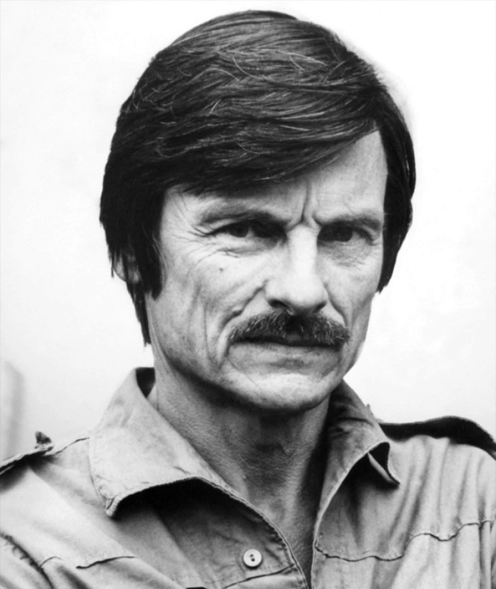

Andrei Tarkovsky
1932 – 1986
Seven feature films in twenty-four years. Read about each one, watch it here, and book a seat at our next screening.
The director
Andrei Arsenyevich Tarkovsky was a Soviet film director and screenwriter, widely considered one of the most influential filmmakers in the history of cinema.
His films explore spiritual and metaphysical themes. They are known for long takes, slow pacing, dreamlike imagery and a constant return to nature, water, fire and memory. He called his method “sculpting in time”, and used the phrase as the title of his book on cinema.
Tarkovsky studied at the Moscow film school VGIK under Mikhail Romm and directed his first five features in the Soviet Union: Ivan's Childhood, Andrei Rublev, Solaris, Mirror and Stalker. After years of conflict with the state film authorities he left the country and made his last two films abroad: Nostalghia in Italy and The Sacrifice in Sweden. He died in Paris in December 1986.

Seven films
Stills


Project team
This site was built as a student information project: planned, prototyped, implemented and tested by a team of two.
Brodovoi Serghei
Project manager and team lead
Organised the project stages and kept the product consistent from first sketch to final release.
Subbotin Alexandru
Software developer
Built the interface, structured the pages, wired up the interactive features and checked every user scenario.
How the site was made
Analysis
We defined the audience, the goals and the three-page structure: home, films and reservations.
Prototyping
The visual flow was tested in Proto.io before any code was written.
Implementation
The prototype became HTML, CSS and JavaScript in VS Code, with a stable menu and a responsive layout.
Testing
Links, images, videos, the reservation form and different screen sizes were checked, including failure cases.